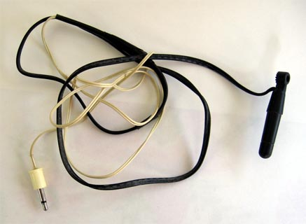
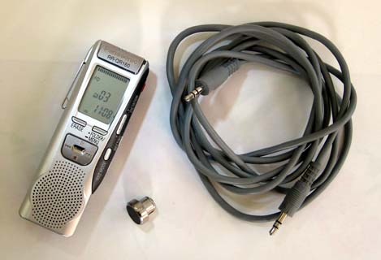
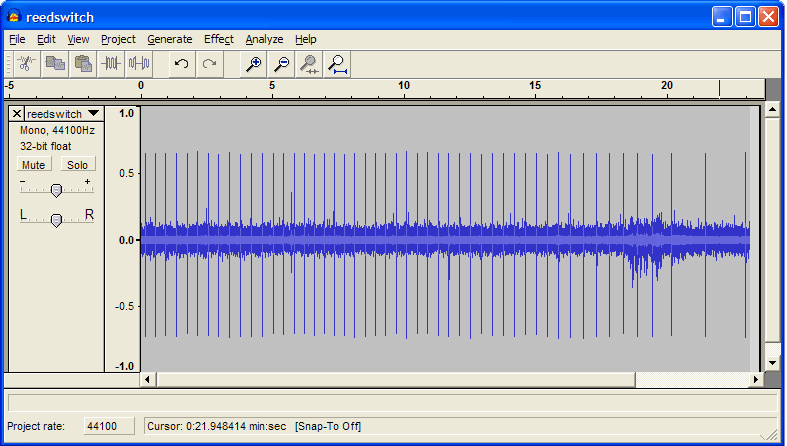
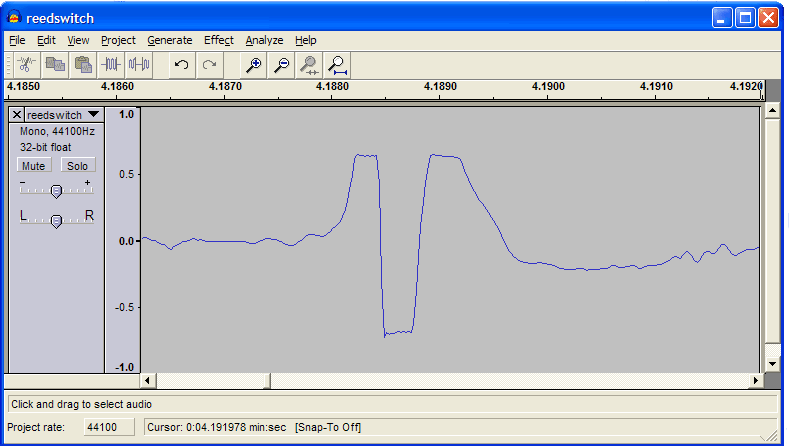

Contents | About | Contact
article 12, issue 04
A Basic Data Logger for Recording a Bicycle's Wheel Rotation
John Snyder
March 21, 2007Abstract
A method is reviewed, for employing readily available components and consumer electronic devices to create a record of a bicycle's wheel rotation.
Introduction
In recent years, numerous manufacturers have offered for sale electronic devices which monitor a bicycle's speed and distance traveled, and which provide a means to download the collected information to a personal computer. The resulting records often display a relatively low resolution, which is acceptable for most purposes. However, determining vehicle drag parameters from roll out tests and conducting other motion studies demand a more precise depiction of time and distance [References 1, 2, 3, 4 and 5]. Several individuals independently discovered this requirement may be satisfied by employing audio-quality recordings made from the output of a simple sensor. This paper serves as a general introduction to those efforts. We encourage readers interested in learning greater detail to study the works cited within the reference section.
Discussion
A basic wheel-rotation data logger begins with an unmodified portable audio recorder, a cycle computer's reed-switch wiring harness, and a spoke-mounted magnet. Modify the wiring harness by replacing the cycle computer mount with a plug which fits into the recorder's MIC input jack [Figure 1]. Complete the kit with the addition of a dubbing cable, connecting the audio inputs and outputs of the recorder to a personal computer [Figure 2].
Install the spoke-magnet and reed-switch on a bicycle in the customary fashion. Plug the modified wiring harness into the audio recorder in the same manner as one would plug in an external microphone. Switch the portable recorder to record mode, place it in a shirt pocket or carrying bag, then ride the bicycle. Afterwards, transfer the recording to a personal computer for storage and analysis.
Moving a magnet past a reed-switch sensor, as used by a common cycle computer, generates a detectable, short-duration pulse. This pulse bears a similarity to the electronic click or pop heard when switching on a microphone. Spinning the wheel while recording the sensor's output generates a series of such pulses, often referred to as a pulse-train [Figure 3]. The start of one pulse to the start of the next adjacent pulse represents one complete revolution of the wheel.
Measure time by utilizing an audio editor program which provides both a visual portrayal of the recorded pulse-train and a way to display elapsed time at any selected point within a digital audio file. The open source program Audacity fills these needs [Reference 6]. With moderate care, events depicted within the recording can be timed precisely using the program's cursor position indicator [Figure 4 and Table].
Measure distance by counting the number of pulses, then multiplying the result by the wheel's circumference.
  Figure 1: Reed-switch and connecting plug. This harness was assembled from recycled components by soldering together the black paired-wires leading from a reed-switch sensor to the white paired-wires and connecting plug from what had been part of a monaural earphone. The splice was then covered with electrical tape.
Figure 2: IC recorder, spoke magnet and dubbing cable. Though a digital voice recorder is shown other types of portable audio devices would suffice, such as; a micro-cassette recorder, an MD recorder, an MP3 recorder, or a miniature FM transmitter.
 Figure 3; A pulse-train viewed as amplitude by time. The blue vertical lines in the signal reflect the spoke magnet having passed by the reed-switch. Here a spinning bicycle wheel placed in a truing stand has been monitored for approximately 23 seconds.
 Figure 4; A single pulse, magnified using Audacity's's zoom tool. The above program-window displays a segment of time 4.1860 to 4.1920 seconds after the start of the audio file.
Rev
Time (s)
Rev
Time (s)
Rev
Time (s)
Rev
Time (s)
Rev
Time (s)
1
00.1541
11
04.1885
21
08.1161
31
12.9192
41
17.2844
2
00.5471
12
04.6016
22
08.8963
32
13.3342
42
17.7919
3
00.9435
13
05.0115
23
09.2883
33
13.7508
43
18.3069
4
01.3420
14
05.4166
24
10.0803
34
14.1690
44
18.8345
5
01.7434
15
05.8166
25
10.4798
35
14.5898
45
19.4239
6
02.1464
16
06.2037
26
10.8807
36
15.0118
46
20.1507
7
02.5499
17
06.5849
27
11.2838
37
15.4377
47
21.4268
8
02.9563
18
06.9646
28
11.6902
38
15.8685
48
22.9676
9
03.3643
19
07.3469
29
12.0973
39
16.3191
10
03.7755
20
07.7310
30
12.5080
40
16.7920
Table: These time values represent the location of a consistent, repeating feature found within each pulse's wave-form.
Conclusion
The information gleaned from the audio recording can be applied to a variety of studies, such as might be facilitated using an accurate stop-watch and a surveyor's distance-measuring wheel. As presented this simple data logger method is most suitable for making records of fairly short duration. The willingness of the user to make repetitious manual measurements serves as a practical constraint for the amount of data obtainable.
References
1. Nijboer. 2000. TIME MEASUREMENTS WITH DIGITAL AUDIO EQUIPMENT. http://www.kvi.nl/~nijboer/wwwtimemeasurement/timemeasurement.htm
2. Starkjohann. 1997. DRAG MEASUREMENT ON HPVs. http://members.shaw.ca/bicyclescience/starkjohann/index.htm
3. Candau, Grappe, Menard, Barbier, Millet, Hoffman, Belli, and Rouillon. 1999. SIMPLIFIED DECELERATION METHOD FOR ASSESSMENT OF RESISTIVE FORCES IN CYCLING. Medicine & Science in Sports & Exercise: Volume 31(10) October 1999 p 1441.
4. Petrushov. 1997. COAST DOWN METHOD IN TIME-DISTANCE VARIABLES. Society of Automotive Engineers, Inc.: SAE publication 970408 p 189-211.
5. Euler, Manfred, Braune, Schall, and Zollman. 1999. USING AUDIOTAPE TO COLLECT DATA OUTSIDE THE LAB: KINEMATICS OF THE BICYCLE.
http://perg.phys.ksu.edu/papers/bike/usingaudiotape.pdf
6. Audacity, a free cross-platform sound editor program available from; http://audacity.sourceforge.net/
Supplemental File
The audio file used in Figures 3 and 4, and the Table; reedswitch.mp3 (363 KB download)